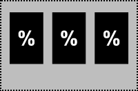

By using the Glazing and Winter Comfort Tool, you agree to the Terms and Conditions.
Cold convective air currents, formed by warm room air hitting the cold window surface, create discomfort at the occupant’s feet and ankles. The strength of these currents depends on the height of the window pane, as well as the interior temperature of the glass.
 Radiant Discomfort
Radiant DiscomfortCold interior glass surfaces affect the mean radiant temperature of occupants, and in turn make them feel cold. This discomfort depends on how much the occupant “sees” of the glass, how cold the interior glass surface is and the emissivity of the glass. If the glass has a room-side low-e coating the radiant discomfort will be greatly reduced.
This tool displays the impact of glazing geometry and U-value on occupant thermal comfort during winter months. It shows when it is possible to eliminate perimeter heat in cases where the U-value is low and windows are small.
Email the developers, visit our github, and read the license.
We've updated! See the release notes, to learn about this tool's improved downdraft comfort model and interface updates.
 ↩
Measure of the window’s thermal performance. If the window panes are large (small impact of the frame) use the center of glass U-value. With assemblies where frame elements are prominent, it is recommended to use the assembly U-value. If using a room-side low-e coating, it can be selected under advanced options. ↩
U-value required to meet the PPD threshold at the specified occupant distance from façade. ↩
If there is a risk of condensation, the interior window surface temperature is within 5°F of the space’s dew point temperature. This happens when the indoor relative humidity is high and the outdoor temperature is low. ↩
A value represenintg one of the coldest expected outdoor temperatures during the annual occupancy period. ASHRAE recommends using a temperature at 1 percentile of the year (where only 1% of hours are colder than this temperature). This value varies with the climate of the project and you can search for your climate's temperature to the right. ↩
Temperature of the indoor air. For radiant discomfort calculations it is assumed that this also represents the temperature of the indoor surfaces. Low indoor air temperatures may lead to occupant discomfort regardless of the glazing configuration. ↩
Relative humidity indoors. This factors into to the thermal comfort calculations as well as the potential for condensation. During winter, this is usually around 20% unless the space is humidified. ↩
Select if the window includes a low-E coating on the interior side of the inner most pane of glass (aka. a room-side low-e coating). Room-side low-e coatings can decrease the U-value of a window, improving the thermal performance and reducing the potential for radiant discomfort. However, they also increase the potential for downdraft discomfort and condensation risk. ↩
Emissivity of the low-e coating located on the room-side surface of the inner-most pane of glass. This is obtained from the manufacturer. If unknown assume 0.2. ↩
R-Value of the wall assembly, including thermal bridges. ↩
Average indoor air speed induced by the mechanical system. Typically ranges from 10-30 fpm. ↩
Insulating value of clothing.
0.6 clo = trousers/knee-length skirt + long sleeved shirt
0.8 clo = trousers/knee-length skirt + undershirt + long sleeved shirt
1 clo = trousers/knee-length skirt + undershirt + long sleeved shirt + long sleeve sweater ↩
Metabolic rate of the occupants. 1 met = seated resting. 1.2 met = typing or standing. ↩
Expected location of the occupant perpendicular to the façade. ↩
Percentage of People Dissatisfied (PPD) is a metric used to define occupants’ satisfaction with their environment. This particular variable sets the acceptable percent of the polulation dissatisfied as a result of cold feet from downdraft off windows. The standard set by ASHRAE for ankle draft discomfort in regularly-occupied spaces is less than 20% PPD. ↩
This variable sets the acceptable Percentage of People Dissatisfied (PPD) from full-body sensations of cold as a result of radiant loss to window surfaces. The standard set by ASHRAE for full-body discomfort in regularly-occupied spaces is less than 10% of the population. Note that it is not possible to get a full-body PPD lower than 5%. ↩